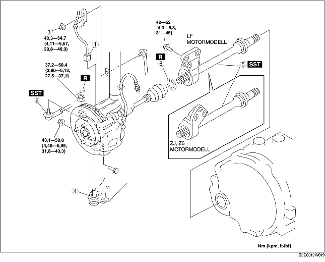

1. Tappa ur växellådsoljan. (Se BYTE AV VÄXELLÅDSOLJA [F35M-R].) (Se BYTE AV AUTOMATVÄXELÅDSSOLJAN (ATF).)
2. Demontera i den ordning som anges i tabellen.
3. Montera i omvänd ordning mot demonteringen.

.
|
1
|
Kontakt för ABS hjulhastighetsgivare
|
|
2
|
Parallellstagände
|
|
3
|
Krängningshämmarens övre länkarmsmutter
|
|
4
|
Kulled, nedre länkarm fram
|
|
5
|
Mellanaxel
|
|
6
|
Clips
|
1. Koppla ur drivaxeln (höger sida) från mellanaxeln genom att knacka på växellådssidans ytterring med en mässingsstav och en hammare.
2. Koppla ur mellanaxelstödet från motorblocket och demontera mellanaxeln.
3. Montera specialverktyget på växellådan efter att mellanaxeln tagits bort.
1. Montera ett nytt mellanaxelclips vid clipsspåret i änden av mellanaxeln så att clipsets öppning är riktad uppåt. Clipsets bredd ska vara inom angivna värden.
2. Efter montering mäter du den yttre diametern.